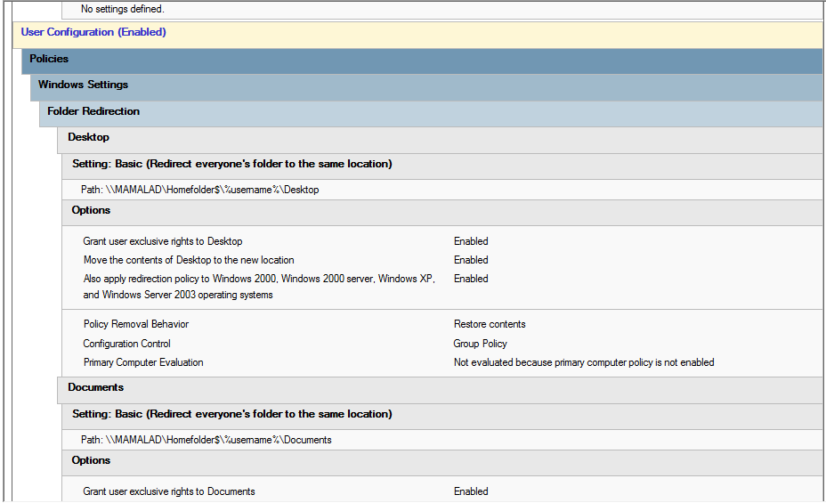

Folder Redirection Policy
Purpose
This policy redirects user folders such as Desktop, Documents, and Downloads to a centralized network location. It ensures data consistency, backup reliability, and prevents data loss in shared computer lab environments.
How it works
When a user logs in, Windows automatically redirects selected folders from the local machine to a network shared path defined in Active Directory. Any files saved by the user are stored centrally instead of the local computer.
How it is applied
- Open Group Policy Management Console (GPMC)
- Edit the User Configuration policy
- Navigate to: User Configuration → Policies → Windows Settings → Folder Redirection
- Select target folders (Documents, Desktop, etc.)
- Set the network share path (e.g. \\server\users\%username%)
- Apply and update policy using
gpupdate /force
Screenshot
Folder Redirection configuration in Active Directory:
